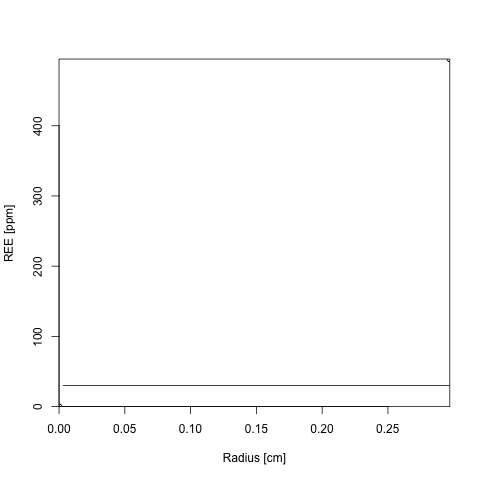

dluskora (R package)

- 'dluskora' is my R package which enables to simulate diffusion-limited REE uptake by low-temperature garnet. This program is another version of Skora et al.'s (2006) program.
- You can download this package from this site. Please type the following command in R console.
remotes::install_github("Ryo-fkushima/dluskora")